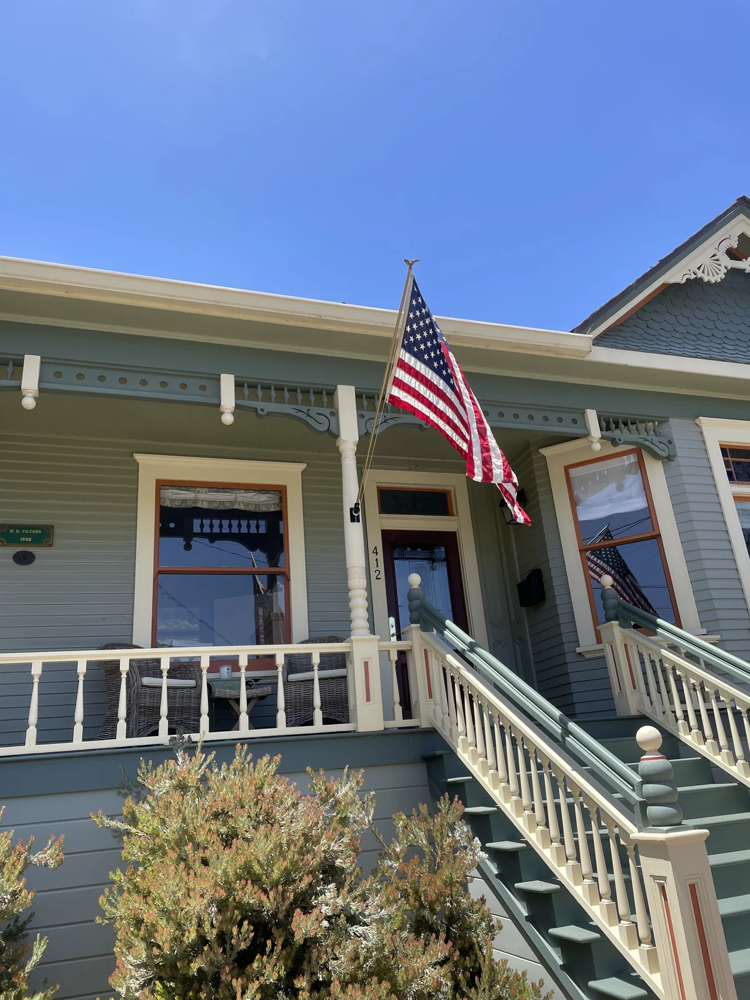
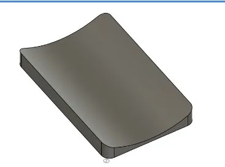
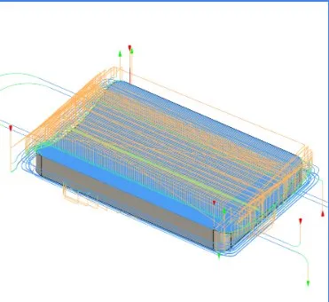

Flag Pole Holder
CTE Engineering Pathway — Pacific Grove High School



Functional aluminum bracket designed to hold a flag pole. Had to mate to a circular column and interface with the flag holder bracket.
Process
- CAD modeled in Fusion 360
- CAM toolpaths generated in Fusion 360
- Machined on Tormach 1100MX CNC mill
